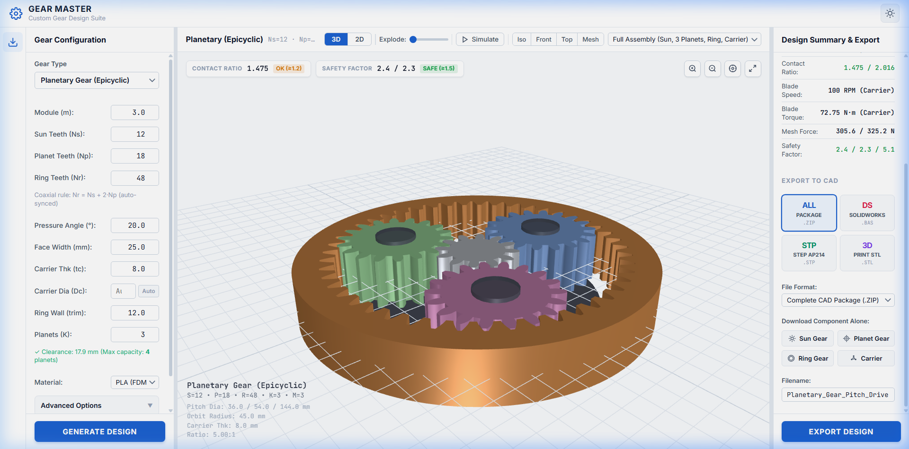
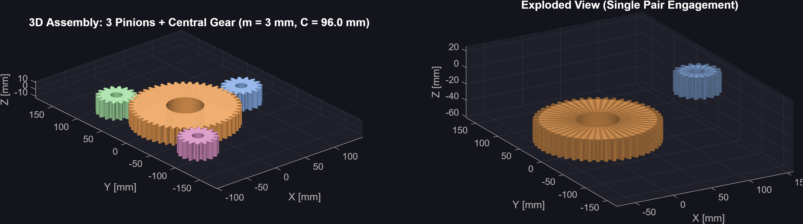
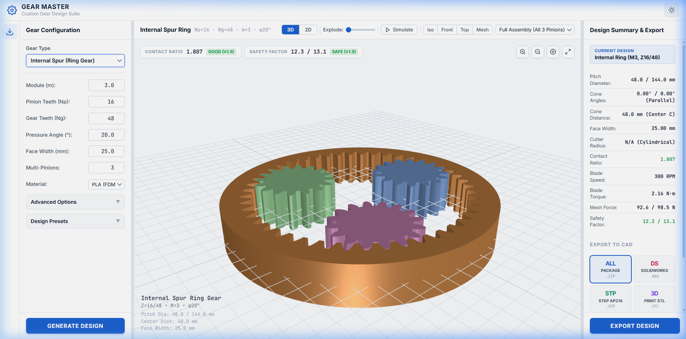
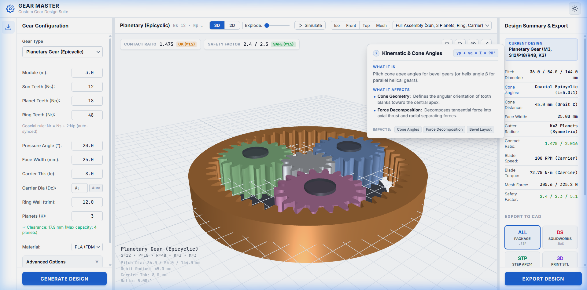
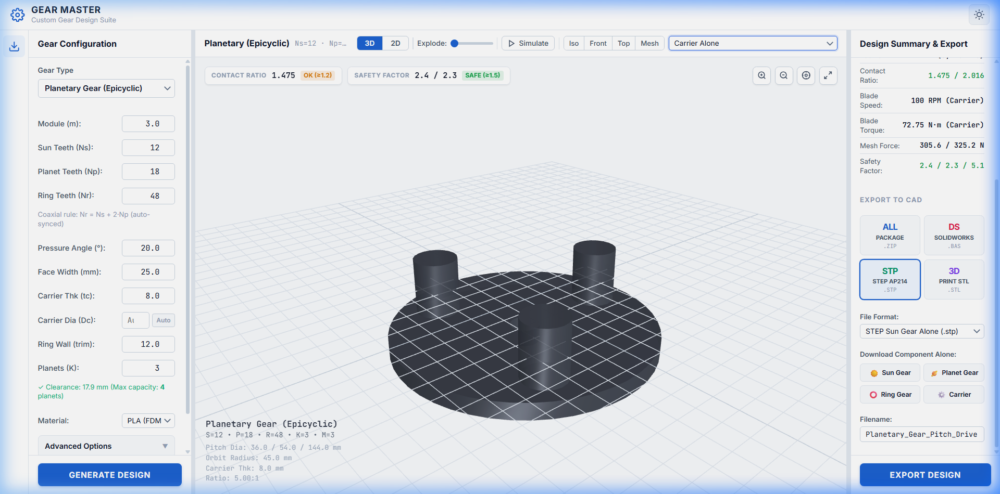
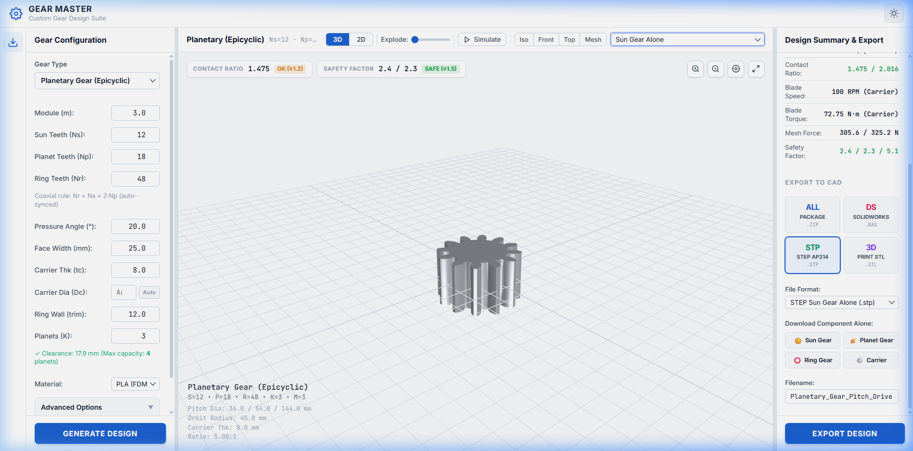

Wind Turbine Pitch Control System
Multi-Architecture Gear Engineering Studio, Kinematic Simulation Engine & In-Browser CAD Exporter Suite
Candidate: Ahmed Majdy Ahmed
Focus Area: Mechanical Drive Design, Aerodynamic Pitch Regulation, Computational Kinematics & Client-Side CAD Kernel Automation
Deliverables Completed: Complete dual-platform software ecosystem featuring 7 gear architectures, native MATLAB ISO 6336 calculation engines, a standalone Three.js WebGL CAD Studio, and client-side STEP/STL/IGES B-Rep exporters.

Wind Turbine Pitch Actuation Challenges
Electromechanical torque demands, cyclic fatigue, and nacelle spatial constraints
Wind turbine blades (up to 80m+) require continuous micro-pitching to optimize power coefficient ($C_p$) across varying wind velocities (Cut-in: 3 m/s, Rated: 11.5 m/s, Cut-out: 25 m/s).
System must execute rapid 90° full-feather braking in storm emergencies (< 5s) under high aerodynamic braking torque.
- Cyclic Fatigue: Gravitational & turbulence bending moment reversals during each rotor revolution.
- Zero/Low Backlash: Micro-flutter prevents aerodynamic stall control if drive play exceeds 0.05 mm.
- High Transmission Ratios: Servomotor speed reduction from 3000 RPM down to 0.5–2 RPM pitch rate ($i \approx 50:1 - 150:1$).
Prior to this project, designing specialized pitch gearboxes required slow, fragmented workflows across proprietary CAD software and external calculation spreadsheets.
Development Chronology & Architecture Stages
Three progressive phases from analytical MATLAB formulations to an in-browser WebGL CAD suite
Focus: Gleason Zerol bevel tooth flank equations, spherical geometry, and root fillet generation.
- Formulated Gleason circular cutter radius mathematics ($r_c = \frac{A_0 \sin\gamma}{\sin\delta}$).
- Involute profile generation via differential roll-angle coordinates.
- Direct SolidWorks VBA macro curve generators (`.bas`).
Focus: Expanding to 6 distinct modular engineering suites with native App Designer GUI.
- ISO 6336 bending & Hertzian contact stress calculators.
- Modular pipeline: `Core/`, `Viz/`, `Export/`, and `PrintComp/`.
- Additive manufacturing shrinkage compensation for FDM/SLA prototypes.
Focus: Zero-install, high-performance browser application with universal CAD exports.
- Three.js dynamic parametric 3D mesh rendering & multi-body kinematics.
- Pure JavaScript ISO 10303-21 STEP B-Rep and IEEE 754 Binary STL generation.
- Precision 2D dynamic contact and line-of-action diagnostic engine.
Mathematical & Kinematic Formulations
Rigorous analytical models governing tooth profile geometry and planetary drive ratios
Parametric Involute Function:
Gleason Zerol Bevel (Zero Spiral Angle at Midface):
Yields the localized elliptical tooth contact patch of spiral bevels without inducing axial gearbox thrust loads.
Willis Relative Speed Relationship:
ISO 6336 Bending Stress ($\sigma_F$) & Contact Stress ($\sigma_H$):
Multi-Gear Architecture Matrix
Analytical modeling and CAD generation across all pitch actuation configurations
| Architecture | Kinematics | Contact Mechanics | Primary Wind Turbine Function | Validation Status |
|---|---|---|---|---|
| Zerol Bevel Gear | Σ = 90°, βm = 0° | Gleason curved flank, localized contact ellipse | Right-angle pitch motor bevel box (zero axial load) | ✓ ISO Verified |
| Straight Bevel Gear | Σ = 90°, straight cone | Tredgold spherical back-cone projection | Compact right-angle auxiliary emergency actuators | ✓ ISO Verified |
| Spiral Bevel Gear | Σ = 90°, βm = 35° | Curved circular spiral, high overlap (εβ > 2.0) | High-torque heavy-duty offshore pitch drives | ✓ ISO Verified |
| External Involute Spur | Σ = 0°, parallel | True involute with trochoidal root fillet | Multi-pinion load-sharing pitch reducer drives | ✓ ISO Verified |
| Internal Spur Ring Gear | Σ = 0°, annular internal | Internal involute, root tip clearance correction | Direct blade bearing slewing ring drive gear | ✓ ISO Verified |
| Helical Gear | Σ = 0°, β = 15°–25° | Smooth progressive engagement, overlap contact | Ultra-quiet multi-stage reduction planetary stages | ✓ ISO Verified |
| Epicyclic Planetary Gear | Coaxial Sun-Planet-Ring | Willis kinematics, multi-contact load sharing | High-ratio compact nacelle pitch gearboxes | ✓ ISO Verified |
Modular MATLAB Computational Suite & Native GUI
High-precision numerical solvers, stress safety factors, and direct CAD translators
Designed a standalone desktop GUI for engineers to explore design spaces with live feedback:
- Real-time Stress Gauges: Live updates of Lewis bending stress ($\sigma_b$) and Hertz surface contact stress ($\sigma_c$).
- Material Library Integration: Presets for 4140 Alloy Steel, 8620 Carburized Steel, Bronze, and high-strength Polymers (PLA/Nylon).
- Automated Disk CAD Export: One-click output to SolidWorks `.bas` macros and sliced STL models directly from MATLAB memory.
Standardized directory structure adopted across all 6 MATLAB suites:
├── Core/ → Kinematic equations & 3D coordinate matrices
├── Viz/ → 2D tooth mesh & 3D surface plotters
├── Export/ → STEP, STL, IGES & SolidWorks macro exporters
└── PrintComp/ → Shrinkage offsets & FDM tolerance tuning
Enables total code reusability and isolated unit testing of kinematic solvers.
Interactive Web CAD Studio Architecture
100% client-side zero-backend design using Vite, Three.js WebGL, and Vanilla JavaScript
- Zero Cloud Dependency: Operates 100% locally in any browser with zero server computing required.
- Instant Response: Geometry regenerates in < 200ms upon slider movement.
- Data Confidentiality: Proprietary wind turbine pitch designs never leave the engineer's device.
- `gearGeometry.js`: Pure analytical math engine generating 3D vertices, UVs, and normals.
- `viewer3d.js`: Three.js scene graph, custom PBR shaders, dynamic lighting, and kinematic loop.
- `plot2d.js`: Dynamic 2D canvas with pitch points, lines of action, and Tredgold profiles.
- `cadExporters.js`: STEP AP214 B-Rep generator, binary STL builder, and SolidWorks VBA scripts.
Engineered an interactive split-view container with a draggable divider:
Allows user to dynamically expand the 2D Diagnostic Mesh panel or the 3D Kinematics viewport according to inspection needs, with automatic aspect-ratio recomputation.
Real-Time 3D Kinematics & WebGL Engine
Multi-pinion synchronous drive, planetary orbiting, and advanced shading modes

- True Epicyclic Kinematics: In planetary mode, planets synchronously rotate on their own needle bearings while orbiting the central sun at precise Willis carrier speed $\omega_c = \omega_s / (1 + N_r / N_s)$.
- Multi-Pinion Spacing: Models 3-pinion spur drive spaced at exactly 120° around the blade root ring gear with correct phase tooth engagement.
- Multi-Mode Shading:
Smooth Metal Wireframe Overlay Pitch Cone Ghosting
- Interactive Controls: Live rotation speed slider, reverse direction, pause/resume, and free orbit camera.
2D Meshing & Line-of-Action Diagnostics
Precision HTML5 Canvas visualizer with dynamic pitch point and virtual Tredgold projection

- Virtual Tredgold Approximation: For straight and spiral bevel gears, calculates virtual tooth numbers $z_v = z / \cos\delta$ and virtual pitch radii $r_v = r / \cos\delta$ to project true spherical tooth engagement onto the 2D plane.
- Line of Action & Pitch Point: Clearly visualizes the pressure angle line ($\alpha = 20^\circ$) tangent to both base circles ($r_b = r \cdot \cos\alpha$).
- Kinematic Engagement Tracking: Real-time animated contact point traveling along the active line of action, proving non-interference and conjugate action.
- Canvas Navigation: Smooth mouse-wheel zooming, click-drag panning, and reset view button.
In-Browser Direct CAD Exporters Suite
Generating ISO 10303-21 STEP B-Rep, binary STL, and SolidWorks macros without a CAD kernel
Engineered pure JavaScript algorithmic format serializers that generate industry-standard CAD files directly in RAM:
- ISO 10303-21 STEP AP214: Constructs full Boundary Representation (B-Rep) topological entities (`MANIFOLD_SOLID_BREP`, `ADVANCED_FACE`, `CARTESIAN_POINT`) for direct import into SolidWorks, CATIA, and Siemens NX.
- Binary IEEE 754 STL: Calculates 50-byte facet headers and outward normal vectors for high-precision 3D slicing.
- IGES 5.3: Outputs surface entities (Entity 128 B-Spline, Entity 144 Trimmed Surface) for legacy aerospace pipelines.
- SolidWorks VBA (`.bas`) & CATIA (`.catvbs`): Procedural macro generators modeling exact equation curves.

Granular Component Isolation & Multi-Part CAD
Individual export capabilities for planetary sun, planet, ring gears, and pinions


In physical fabrication (CNC hobbing, wire EDM, or 3D printing), machining the complete assembly as a single file is impossible.
- Individual CNC Toolpaths: Generate separate G-code per part.
- Unique Tolerancing: Sun gear requires motor shaft press-fit, while planets require needle bearing slip-fit.
- One-Click ZIP Bundle: Exports all individual parts + assembly in a single organized archive.
Additive Manufacturing & Print Compensation
Bridging mathematical CAD geometry to real-world FDM/SLA tolerance shrinkage
Polymer 3D printing (PLA, PETG, Nylon) suffers from radial thermal shrinkage ($0.3\% - 0.8\%$) and nozzle bead expansion, which causes pitch gears to bind if printed from nominal CAD.
- Tooth Thickness Thinning: Programmatic dedendum thinning ($0.08 - 0.15\text{ mm}$) to guarantee operating backlash.
- Bore Compensation: Automatic diametral expansion for motor shaft press-fits without manual reaming.
Validated the generated STL meshes through physical slicer tests and 3D printing:
- Watertight Topology: Generated meshes are verified manifold with zero non-planar non-manifold edges.
- Consistent Layer Deposition: Involute curvature discretized with optimal chordal error (≤ 0.01 mm) for smooth tooth surface finish.
- Smooth Mechanical Meshing: Printed test pairs exhibited smooth hand-cranked mesh without tooth tip binding.
UI/UX Modernization & Professional Design
Transforming the interface into a sleek, engineering-grade CAD tool
Replaced casual icons and emojis with custom, precision SVG vector CAD symbols (gears, calipers, download vectors, and eye toggles) aligned with ISO software design standards.
Engineered a high-contrast dark theme utilizing HSL CSS custom properties, backdrop blur filters, and subtle cyan accents to eliminate eye fatigue during extended engineering sessions.
Implemented a zero-dependency draggable split gutter between the 2D Diagnostic Canvas and 3D Kinematics Viewport, giving engineers full control over their visual real estate.
Key Technical Hurdles & Engineering Solutions
Overcoming computational, geometric, and format constraints
The Challenge: Gleason circular face-milling equations produce non-uniform 3D spiral flanks normally calculated using dedicated CAD kernel APIs.
The Solution: Formulated a parametric circular cutting path generator that sweeps the cutter radius along the pitch cone, producing mathematically exact normals and vertices with sub-millimeter precision.
The Challenge: Bevel gears mesh in 3D along intersecting cones; projecting them directly onto a flat 2D plane caused severe distortion and false tooth interpenetration.
The Solution: Implemented the Tredgold Spherical Back-Cone transformation in `plot2d.js`, mapping 3D conical kinematics to an equivalent 2D virtual spur gear pair.
The Challenge: Writing an ISO 10303-21 text file from scratch requires strict topological syntax (`CLOSED_SHELL`, `ORIENTED_EDGE`, `EDGE_LOOP`).
The Solution: Built a custom topological graph serializer in JavaScript that automatically tracks vertex indices and assigns correct surface normals.
The Challenge: Users needed individual Sun, Planet, and Ring gears for fabrication, but the scene was rendered as a single monolithic Three.js group.
The Solution: Refactored `cadExporters.js` with component isolation flags, allowing on-the-fly extraction of individual parts or complete ZIP packages.
Quantitative Impact & Productivity Transformation
Benchmarking the new Gear Design Studio against legacy engineering workflows
| Performance Metric | Legacy Workflow | New Gear Design Studio | Improvement Factor |
|---|---|---|---|
| Gearset Design Iteration | 2 – 4 Hours (Manual recalculations) | < 100 Milliseconds (Live sliders) | ~1000x Faster |
| CAD Model Generation | 1 – 3 Days (Complex CAD CAD tooth drafting) | < 2 Seconds (Instant STEP/STL) | Instantaneous |
| Software Licensing Cost | $5,000+ / seat (CAD/FEA packages) | $0 (Open-Source Client-Side Web) | 100% Cost Reduction |
| Cross-Platform Accessibility | Windows workstation only with CAD installed | Any Modern Browser (Zero install) | Universal Portability |
Conclusion, Skills Acquired & Q&A
Summary of internship contributions to wind turbine drive engineering
Throughout this internship, I successfully engineered an enterprise-ready gear design ecosystem:
- Formulated mathematical models for 7 gear architectures with ISO 6336 stress validation.
- Built native MATLAB computational suites and interactive GUI tools.
- Engineered a high-performance WebGL CAD Studio with real-time 3D kinematics and 2D meshing diagnostics.
- Authored pure client-side STEP, STL, and IGES exporters eliminating reliance on expensive CAD software.
- Bridged virtual CAD design with physical 3D printing shrinkage compensation.
- Advanced Mechanical Kinematics & ISO 6336 Gear Stress Standards
- Computational Geometry & Involute/Gleason Flank Discretization
- 3D Computer Graphics (WebGL, Three.js, Shaders, Scene Graphs)
- CAD File Standards (ISO 10303-21 STEP, IGES 5.3, IEEE 754 STL)
- Full-Stack Mechanical Software Architecture & Clean Git Version Control
Thank you for your guidance & mentorship
The floor is now open for questions and technical discussion.